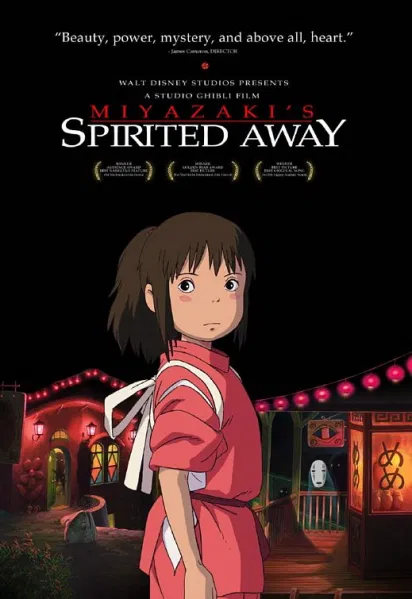
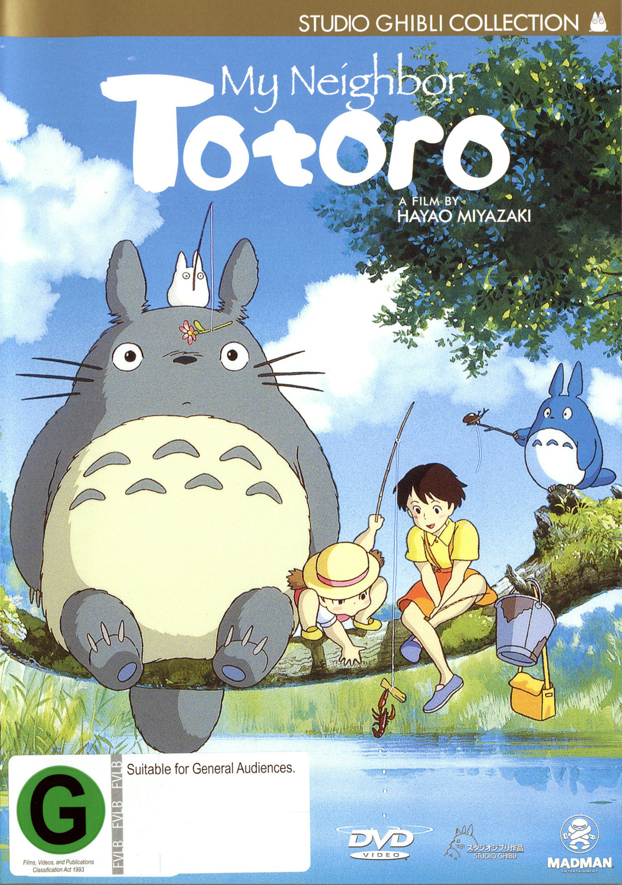

Best Movies
|  | 2001 | Released in 2001, Spirited Away is Miyazaki taking on the themes of a classic fairy tale but doing it in a way that is wholly and completely unique.
Spirited Away is about a girl named Chihiro and her parents, who are turned into pigs. They end up in a universe that is completely the opposite of the world in which she came from. When she ends up forced to battle malevolent spirits, she realizes the horror and has to grow up fast in order to survive. The movie won the Oscar for Best Animated Feature and sits at the top of many fan's lists of the best Miyazaki movies. |

|
2004 |
Howl's Moving Castle was an Oscar-nominated animated film for Hayao Miyazaki and one that was well-deserved of that honor.
Based on the book by Diana Wynne Jones, this Miyazaki movie tells the story of a girl named Sophie who is turned old through a magical spell, falling in love with a handsome wizard. |
.png)
|
2008 |
One of his final films as a director, Miyazaki told the story of a fish-girl named Ponyo who dreams of one day becoming a human girl.
Kind of like a Little Mermaid story in reverse. It isn't one of the best Miyazaki movies but it might be the most visually dynamic looking. Plus, it's a lot deeper than originally given credit for. |
|  | 1988 |
My Neighbor Totoro is the Miyazaki movie that put the filmmaker on the map. Released in 1988, the animator had already made some great movies but it was this one that crossed over and took America by storm.
The movie is so iconic that the character of Totoro—the giant rabbit/cat hybrid thing—is the Studio Ghibli symbol. The movie takes place in Japan after World War II and follows a small family in a rural village. The two daughters discover a magical world all around them, including new friends like Totoro. The movie was groundbreaking and influenced so much of what came later — especially the animation studio Pixar. |

|
1989 |
Released in 1989, Kiki's Delivery Service was the first Miyazaki movie that came after he received worldwide accolades for My Neighbor Totoro.
With this movie, he proved that he was not a one-hit-wonder; he was a master of many different styles of storytelling. When it comes to this film, Miyazaki told a smaller coming-of-age story about Kiki, a 13-year-old witch who has to spend a year living on her own before she can continue training. When she starts to lose her powers after falling into depression, she has to overcome her insecurities and find her place in the world. |